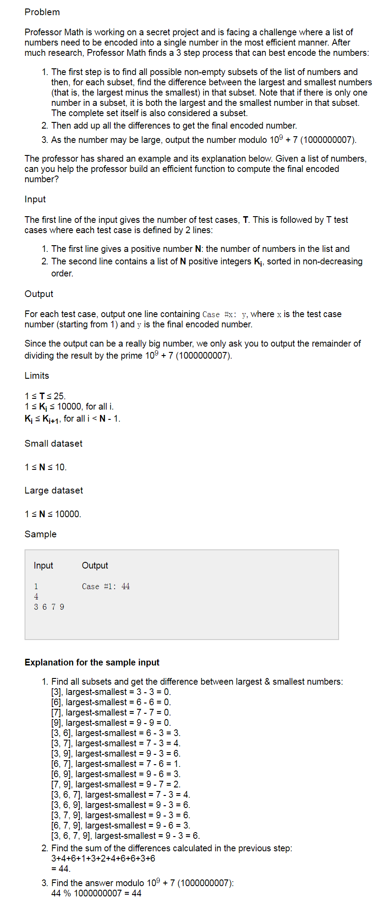

谷歌codejam:https://codejam.withgoogle.com/codejam/contest/11304486/dashboard.
problem A
 小规模测试文件：https://drive.google.com/open?id=0B2aHWGYn_JL-WFhaWVMxaXpxWVk 大规模测试文件：https://drive.google.com/open?id=0B2aHWGYn_JL-X1BoUlUzZFptQzQ
因为给出的序列是有序的，我们用i表示开始的元素，用j表示结束的元素，比如对于例子[3,6,7,9]来说，i=0,j=2表示以3开始，以7结束的属于[3,6,7,9]的子集的数量，所有这样的子集都有相同的差值7-3=4,所以差值乘以数量就是结果。
现在问题的关键就是以i开头的，j结尾的子集的数量的确定。 先来 看[3,6]，只有[3,6], 1个 看[3,7]，有[3,7],[3,6,7]; 2个 看[3,9], 有[3,9],[3,6,9],[3,7,9],[3,6,7,9]； 4个 看[6,7],有[6,7]; 1个 看[6,9],有[6,7],[6,7,9]; 2个。
我们发现，子集的数量只与i和j的距离有关系。此关系是\(2^{j-i-1}\)
利用这个规律，我们可以简单的编写一下程序计算结果：假设一个实例数据存储在v[]中。num是v的长度。sum=0;
仔细观察上面的代码，我们发现每次都要计算\(2^i\),这是一个耗时的操作，尤其是当i很大的时候。我们可以事先计算出所有需要的值存储在一个数组中，这样只需要计算一次就可以了。那么我们需要计算到2的多少次方呢？我们查看最大的那组的数据规模，发现N最大是10000，所以只要稍微大于10000就可以了。这里设置maxn = 10005;
|
|
我们对比一下优化前后的运行时间：
在maxn=10005的情况下，输出是0，363. 单位是毫秒。 可以看到，这个差距还是相当大的，maxn越大，越明显。
这样的时间复杂度其实已经可以解决这个问题了。 完整的代码：
|
|
这里还有另外一个版本的代码，貌似效率更高一些，但是还不是很明白原理：
|
|
problem B
|
|